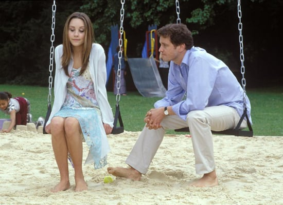

dress
dress


 dress
dress
What A Girl Wants
A look back at What A Girl Wants, how it holds up and how it influnced who I am
What a Girl Wants, starring Amanda Bynes and Colin Firth, tells the story of Daphne Reynolds (Bynes) who upon finishing high school and unsure where she wants to study decides to track down her long-lost father (Firth). With a resounding 35% on Rotten Tomatoes What a Girl Wants attempts to tackle class and family in the all too common troupes of Daphne not caring about class and pissing people off. Unsurprisingly the parents end up back together and Daphne decides to stay in London to be with the guy she dated for presumably 2 weeks.
What a Girl Wants hit theaters when I was twelve, the perfect age for a film that is mostly Amanda Bynes tropesing around London while fun upbeat music plays. This was peak Amanday Bynes, Amanda Show wrapped up in 2002, the same year Big Fat Liar came out (which by the way I also loved and had on DVD which included behind the scenes looks at the staging and props) and What I Like About You had just wrapped season 1 (which, though I had forgotten about until right now, was also comedy gold). Safe to say Bynes was busy and I was here for all of it. Knowing now what she’s been through and going through makes this a rough watch so quite frankly I’m going to ignore that.
The movie begins with the most questionable of questionable graphics of a butterfly flying through New York, I understand that it’s 2003 and we’re all very excited about CGI (cough,Spy Kids 3-D: Game Over, cough) but just because we have the technology doesn’t mean we have to use it. I assume the butterfly is some kind of metaphor for Daphne finding her wings but could we not have just used a bird? New York has a lot of pigeons, maybe find one of those.
The Fashion
I want to take this moment to reflect on some of Daphne’s choice outfits. When she arrives in London she’s wearing a long thin scarf with fingerless gloves, and what appears to be a blazer. Now let me start off by saying in my twelfth year on this planet and about to start high school this is what I thought was cool. It seemed effortless and edgy and like I understood fashion, having recently spent time looking at vintage blazers online I’m going to say that it still seeps into my style today but I have some serious questions starting with what season is this? Based on the context we received at the beginning of the film I am going to say it is summertime and while I understand that London is not the hottest but according to metoffice.gov.uk London was experiencing an unprecedented heat wave in 2003 and having grown up in Australia, let me tell you I have never once looked at fingerless gloves in the summertime and thought ‘yeah, this is the time to bring those out, keep my hands warm but my fingers cool.” Fingerless gloves as a whole are just a ridiculous concept. Next is the outfit she wears at the fashion show, hipster flare jeans with a white tank top, love it, here for it, as a slightly overweight teen could not pull it off but loved to try.
The biggest fashion question I have is how on earth did the dress Daphne was given for Peach and Pear’s coming out party, go from a 60s curtain to a sateen one sholder dress? Just take a moment to look at that dress, like how? All she seemed to have was a pair of scissors. Based on the knowledge I acquired in my year seven textiles class, she would at least need some pins, some kind of stencil and a sewing machine.
The Names and Comebacks
I don’t even know where to start with this. I guess alphabetically makes sense. Armistead, this surely is not a real name, it sounds like a name someone would make up when they want people to think they are British. At first I thought they said armistice, and figured his family was part of the 1918 Armistice and it just became some weird family thing to call the first born Armistice. I did just Google it and apparently it is an English name meaning “hermit's place” and given that this character is absolute trash, I do hope he lives a life of seclusion. On the note of family names, let’s just take some time to think over the names Peach and Pear!? And their forgotten sister Parsnip. I have so many questions, firstly why? When Pear is alone does she have to explain that her family is obsessed with fruit and she got stuck with one of the worst fruits as her name? How will job interviews go for these two? Do their parents hate them? Could they have not given them proper names and just called them Peach and Pear as nicknames? I was once told about a set of twins called Strawberry and Cream, which arguably is worse than these names especially Cream (gross) so I just want to do a worldwide veto right now on food based matching names for twins.
This movie does have some actually funny one-liners, such as when Clarissa tells her mother “maybe someone should've put a cork in it seventeen years ago,” witty, cruel and inappropriate for a tween movie, it’s perfection. However there are moments such as when Armistead's friend says “I'd let her dump tea in my harbor anytime.” What? Who says that? Like dude my major was in Modern History and even I don’t think that is a culturally relevant zinger. And let’s just think about it practically for a second, assuming this a wittism about sex would it not make more sense to make her the harbour and you the tea? Gross I know but if you’re going make a sexist comment at least make it a visually accurate one. “Holy poo on toast.” Not a thing not even a little bit. The writing just wreaks of an adult trying to guess how a teen might talk in England
Sexism and Gender Troupes
Like almost all tween movies of the early 2000s, What a Girl Wants is littered with problematic gender stereotyping and troupes. Let’s start with the aforementioned Armistead and friends. Old school aristocrats the core, these teenage boys are enthralled by Daphne without ever having spoken to her. They undoubtedly view her as a free-spirited (loose) American that they assume will fall for them head over heels based purely on their accent? I guess? I mean British accents were the go to charming accent of the early 2000s. To Daphne’s credit she is unflinching in her distaste for them and never gives Armistead the time of day. To her discredit Clarissa doesn’t hold the same distaste and appears distraught over the idea that he would go for Daphne over herself. Come on girl, you’re better than that. Well actually I don’t know, we never learn anything about Clarissa other than her mother and her are social climbers and one-dimensional villains. I do wish movies would stop playing the evil stepmother card, it only stagnates female characters and proliferates the idea that the only way for a woman to be successful and financially comfortable is being married to a wealthy man. Glynnis (again a peculiar name) seems politically cunning, intelligent and manipulative in addition to her father being the political adviser to Henry, why doesn’t she pursue her own political career? Or be any other kind of career woman. Furthermore she seems to come from money does she really need Henry? The plot pushes the idea that her father Alistar has been pulling the strings to put her with Henry for years, and yet they seem to have only recently become a couple, he was single for many years after Libby left, why would they have not been put together sooner. This plot device furthers the stereotype of the bitchy manipulative woman, is lazy writing that has a weak timeline and leaves many unanswered questions.
What a Girl Wants showed twelve year old me what a cool bohemian teenager is. Daphne’s sass and sarcasm influenced how I spoke and what I thought was cool. The movie followed common troupes that shaped my beliefs around how women interact with each other and how teenage boys speak to each other. All-in-all the story between Daphne and her father is sweet and they bring out the best in each other.